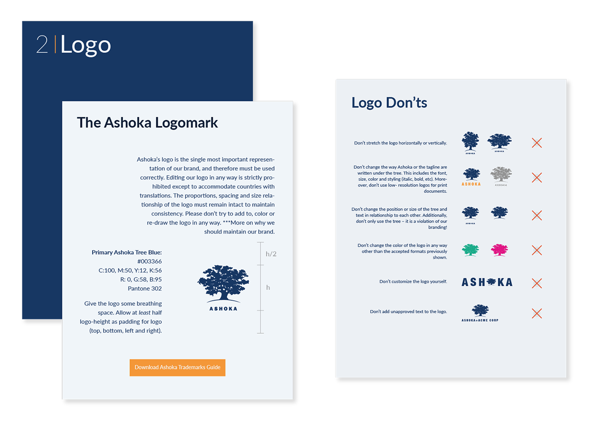
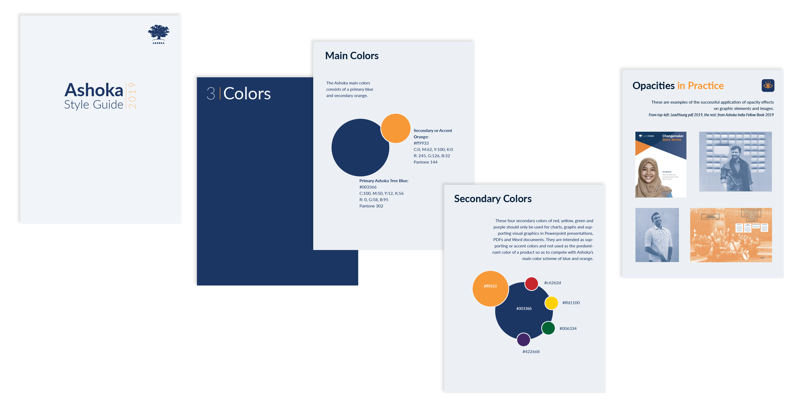
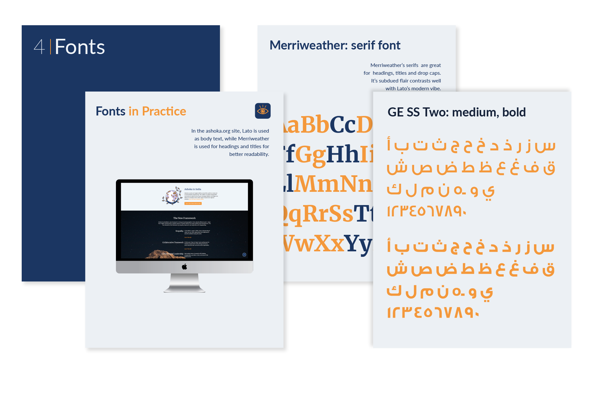
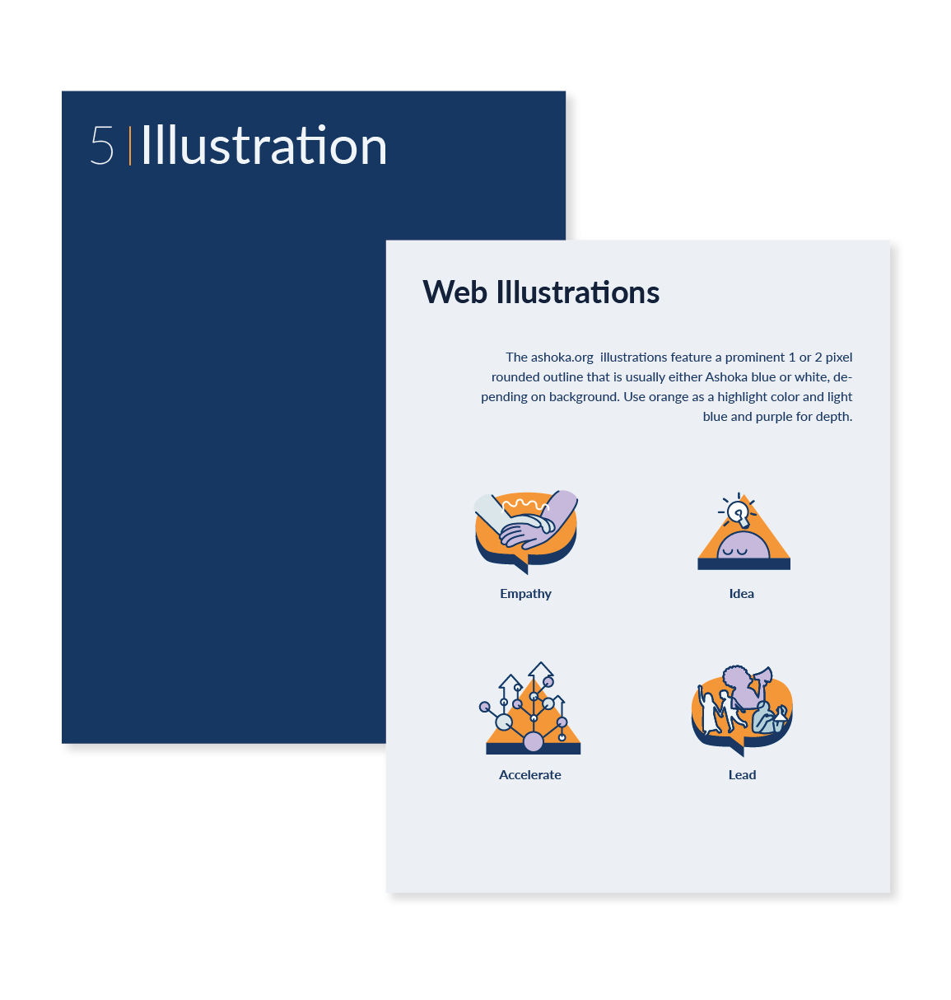

Role
- Graphic and Visual Designer
- Brand Design Manager
Branding Challenge:
Ashoka is a nonprofit focused on social entrepreneurship, with nearly 40 offices worldwide. Over time, regional adaptations of the brand had led to “branching”: offices improvising logos, colors, and styles to meet local needs. Without a unifying reference point, Ashoka’s visual identity risked losing cohesion and recognition.
Framing Question: How can a global organization with diverse cultural contexts maintain brand parity while allowing flexibility for local adaptation?

Cultural Complexity
Ashoka’s diversity meant that cultural and socio‑political factors influenced branding in unexpected ways. In South Africa, for example, the traditional blue and orange palette carried negative connotations tied to Apartheid history. Local teams had adapted the brand to avoid these associations, but such changes underscored the need for a shared framework.
Facilitating the Process
In 2018, I joined Ashoka as a visual designer to help address this challenge. Guided by senior leadership, I convened communications leads from Spain, France, India, Egypt, the Philippines, Malaysia, and Singapore into what we called the Branding Team of Teams. My role was to facilitate dialogue, broker consensus, and document the current state of the brand across regions.
Building the Solution
Through collaborative workshops and audits, we cataloged inconsistencies and regional adaptations. I used my design skills to compile examples into a digital PDF style guide — a shareable, accessible tool that could travel easily across offices.
Together, we established guidelines for the logo, color, typography, photography, and illustration, while also documenting flexible options for regions with unique cultural needs.

Outcome and Impact
The resulting style guide became a living document — not a rigid manual, but a framework for ongoing conversation. It provided a singular reference point for Ashoka’s brand, while respecting local nuance. By facilitating consensus and documenting best practices, the guide helped restore cohesion across continents and empowered offices to steward the brand more confidently.


Bringing parity to a global brand through collaboration, facilitation, communication, and branding leadership.

Discussion and Next Steps
The style guide was designed to evolve. Future iterations would include:
- Ongoing feedback from country offices.
- Updates to reflect new cultural contexts.
- Expansion into digital platforms and social media assets.
The project demonstrated how facilitation, design analysis, and collaborative leadership can bring parity to a global brand without erasing local voices.